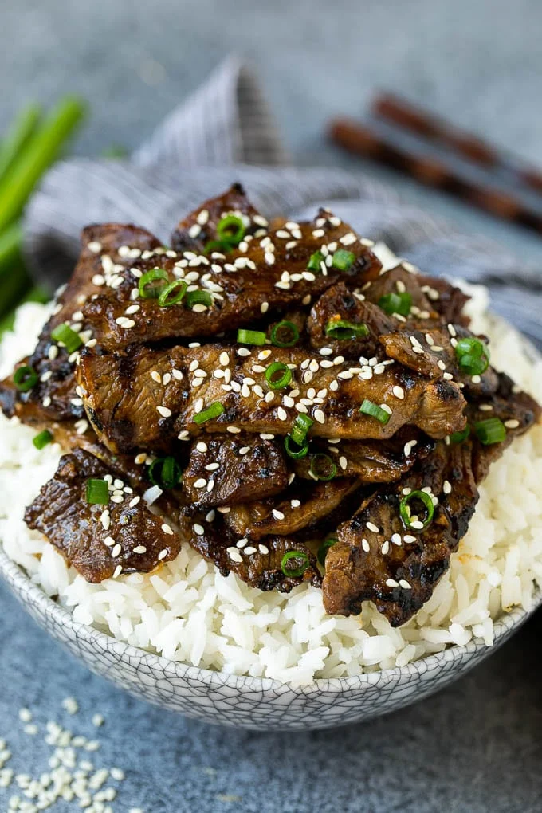

Beef Bulgogi

Descripton
Ingredients
- 5 tablespoons soy sauce
- ¼ cup chopped green onion
- 2 ½ tablespoons white sugar
- 2 tablespoons minced garlic
- 2 tablespoons sesame seeds
- 2 tablespoons sesame oil
- ½ teaspoon ground black pepper
- 1 pound flank steak, thinly sliced
Steps
- Gather all ingredients.
- Whisk soy sauce, green onion, sugar, garlic, sesame seeds, sesame oil, and
pepper together in a bowl.
- Place flank steak slices in a shallow dish. Pour marinade over top.
Cover and refrigerate for at least 1 hour or overnight.
- Preheat an outdoor grill for high heat, and lightly oil the grate.
- Quickly grill flank steak slices on the preheated grill until slightly charred and
cooked through, 1 to 2 minutes per side.
Nutrition (Per serving)
232 13g 12g 16g
Calories Fat Carbs Protein
Voila! Food is ready to be eaten.